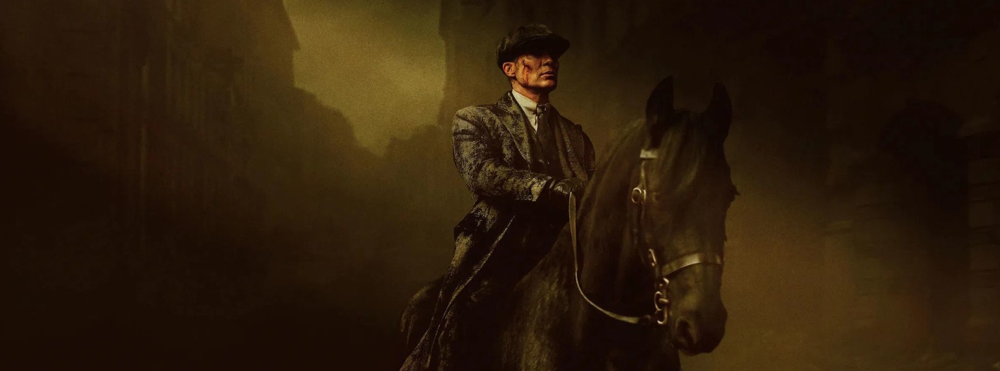

Thomas Shelby e os Peaky Blinders em destaque.
Thomas Shelby e os Peaky Blinders em destaque.

Cena com atmosfera escura e dramática.
Visual elegante e marcante dos personagens.
Visual forte e identidade bem definida.
A imagem mostra o grupo principal com roupas formais, postura séria e presença marcante.
Isso reforça a identidade visual da série e o peso dos personagens na narrativa.
Cenário escuro e composição dramática.
A cena com o cavalo transmite poder, mistério e um clima mais sombrio.
A iluminação escura ajuda a representar o estilo intenso e cinematográfico de Peaky Blinders.